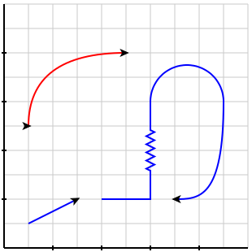
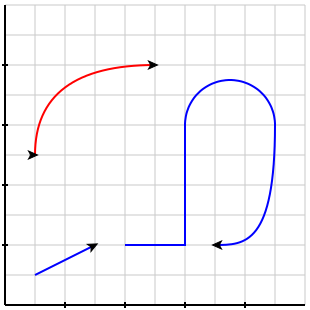
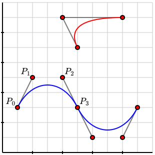
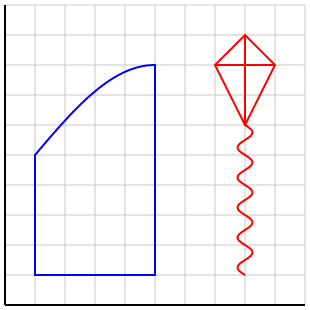
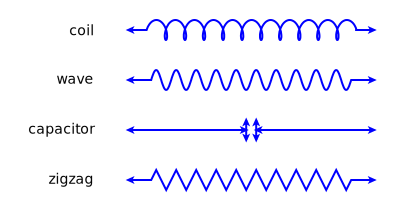
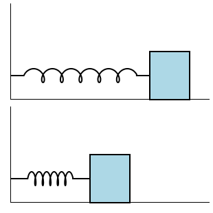

Section 3.10 Paths
The
<path> tag provides authors with the means to create more complicated objects by concatenating simpler ones. As a preview, notice that there are two <path>s in Figure 3.10.1. The simpler path, in red, is a single quadratic Bézier curve. The more complicated path, in blue, is composed of line segments, a circular arc, and a cubic Bézier curve, with one of the line segments decorated with a zig-zag pattern.
<path>s.Subsection 3.10.1 Defining paths
We will first focus on how a
<path> is defined by concatenating simpler pieces. Throughout the definition of a path, there is always a current point that is used to construct the next piece of the path. For this reason, a <path> tag must always have a @start attribute, which serves as the initial point of the path.
Figure 3.10.2 shows two paths and the PreFigure source given in Listing 3.10.3.

<path>s.<diagram dimensions="(300,300)" margins="5">
<coordinates bbox="(0,0,10,10)">
<grid-axes decorations="no"/>
<path start="(1,1)" stroke="blue" arrows="1">
<lineto point="(3,2)"/>
<moveto point="(4,2)"/>
<horizontal distance="2"/>
<vertical distance="4"/>
<arc center="(7.5,6)" radius="1.5" range="(180,0)"/>
<cubic-bezier controls="((9,2), (8,2), (7,2))"/>
</path>
<path start="(1,5)" stroke="red" arrows="2">
<quadratic-bezier controls="((1,8),(5,8))"/>
</path>
</coordinates>
</diagram>
The first path in blue, defined by lines 4 through 11, demonstrates many options that are available when defining a path.
- lineto
- The
<lineto>tag has a@pointattribute, as seen in line 5. This has the effect of adding to the path a line segment from the current point to the@pointand updating the current point. - rlineto
- This is similar to a
<line>tag except that the@pointattribute is interpreted as a relative change from the current point. - moveto
- The
<moveto>tag, shown in line 6, simply updates the current point to the given@pointwithout adding a line segment. In effect, it is like picking up your pen. - rmoveto
- This tag interpretes the
@pointas a relative change in the current point. - horizontal
- The
<horizontal>tag is like a<lineto>where the new endpoint is a given horizontal@distancefrom the current point. - arc
- An
<arc>tag adds a circular arc to the path with a specific@center,@radius, and angular@range. If the first point of the arc is not the same as the current point, then a line segment from the current point to the first point is added. - cubic-bezier and quadratic bezier
-
Bézier curves are smooth curves defined in terms of a set of control points. Mathematically, Bézier curves are parametric curves whose coordinate functions are polynomials. PreFigure provides access to both cubic and quadratic Bézier curves through the tags
<cubic-bezier>and<quadratic-bezier>.Figure 3.10.4 shows two paths consisting only of Bézier curves. The lower path consists of two cubic Bézier curves. The labeled point \(P_0\) is the starting point while \(P_1\text{,}\) \(P_2\text{,}\) and \(P_3\) are the three given control points. The final control point, \(P_3\text{,}\) is the endpoint of the first Bézier curve while the control points \(P_1\) and \(P_2\) define the initial and final velocities of the curve.Figure 3.10.4. The graphical result of two <path>s.A quadratic Bézier curve, the upper curve in Figure 3.10.4, is similar but is defined by only two control points.Listing 3.10.5 shows the PreFigure source, omitting some of the details, of Figure 3.10.4.<diagram dimensions="(300,300)" margins="5"> <coordinates bbox="(0,0,10,10)"> <grid-axes decorations="no"/> <path start="(1,3)" stroke="blue"> <cubic-bezier controls="((2,5),(4,5),(5,3))"/> <cubic-bezier controls="((6,1),(8,1),(9,3))"/> </path> <path start="(5,7)" stroke="red"> <quadratic-bezier controls="((4,9),(8,9))"/> </path> </coordinates> </diagram>Listing 3.10.5. The PreFigure source for the Bézier curves in Figure 3.10.4 - Repeat
- A
<repeat>tag can be included inside a<path>as long as its children are allowed in a<path>. See Section 5.1 for more details. - Other constructions
-
Some familiar constructions, such as
<graph>,<parametric_curve>, and<polygon>can also be placed inside of a<path>. Ths is demonstrated in Figure 3.10.6 and its accompanying Listing 3.10.7.Figure 3.10.6. The graphical result of two <path>s.<diagram dimensions="(300,300)" margins="5"> <coordinates bbox="(0,0,10,10)"> <grid-axes decorations="no"/> <definition>f(x)=3*sin((x-1)/8*pi)+5</definition> <path start="(1,1)" stroke="blue" closed="yes"> <vertical distance="4"/> <graph function="f" domain="(1,5)"/> <lineto point="(5,1)"/> </path> <definition>f(t)=(8-0.25*sin(2*(t-1)*pi),t)</definition> <path start="(8,1)" stroke="red"> <parametric-curve function="f" domain="(1,6)"/> <polygon points="((8,6),(9,8),(8,9),(7,8),(8,6))"/> <moveto point="(7,8)"/> <horizontal distance="2"/> <moveto point="(8,6)"/> <vertical distance="3"/> </path> </coordinates> </diagram>Listing 3.10.7. The PreFigure source for the Bézier curves in Figure 3.10.4
A
<path> may have an attribute @closed="yes" that closes the path. You will need to be explicit about how the <path> is displayed by specifying a @stroke and/or @fill.Subsection 3.10.2 Decorations
Line segments within a
<path> defined by a <lineto>, <rlineto>, <horizontal>, or <vertical> may be decorated in a variety of ways using a @decoration attribute. The value of this attribute is a set of parameters separated by semicolons, the first of which is the type of decoration, either coil, wave, zigzag, or capacitor, as shown in Figure 3.10.8

path decorations.<diagram dimensions="(400,200)" margins="5">
<coordinates bbox="(-3,2,10,10)">
<path start="(1,9)" closed="no" arrows="2" stroke="blue">
<rlineto point="(8,0)"
decoration="coil; number=10; dimensions=(10,10)"/>
</path>
<label anchor="(0,9)" alignment="w">coil</label>
<path start="(1,7)" closed="no" arrows="2" stroke="blue">
<rlineto point="(8,0)"
decoration="wave; number=10; dimensions=(10,10)"/>
</path>
<label anchor="(0,7)" alignment="w">wave</label>
<path start="(1,5)" closed="no" arrows="2" stroke="blue">
<rlineto point="(8,0)"
decoration="capacitor; dimensions=(10,10)"/>
</path>
<label anchor="(0,5)" alignment="w">capacitor</label>
<path start="(1,3)" closed="no" arrows="2" stroke="blue">
<rlineto point="(8,0)"
decoration="zigzag; number=10; dimensions=(10,10)"/>
</path>
<label anchor="(0,3)" alignment="w">zigzag</label>
</coordinates>
</diagram>
The
coil decoration resembles a spring. You can specify the number of coils on the line segment, the dimensions, and the center.The
dimensions parameter is an ordered pair whose values are interepreted in SVG coordinate lengths. The first number gives the horizontal distance traversed by one coil while the second gives the maximum vertical displacement from the undecorated line segment.The
center parameter is a number between 0 and 1, interpreted as a fraction of the length of the line segment, that indicates where the center of the coils lies. The value of this parameter is 0.5 by default, which centers the coil on the line segment.
Figure 3.10.10 shows some examples with the source code in Listing 3.10.11.
coil decorations.<diagram dimensions="(300,200)" margins="5">
<coordinates bbox="(0,-0.5,5,2.5)">
<path start="(0,0)" stroke="black">
<lineto point="(5,0)"
decoration="coil; number=5; dimensions=(10,10); center=0.7"/>
</path>
<path start="(0,1)" stroke="black">
<horizontal distance="5"
decoration="coil; number=10; dimensions=(10,5)"/>
</path>
<path start="(0,2)" stroke="black">
<lineto point="(5,2)"
decoration="coil; number=5; dimensions=(5,10)"/>
</path>
</coordinates>
</diagram>
Figure 3.10.12 demonstrates the use of some coils.

1
judsonbooks.org/ode-project/<diagram dimensions="(300,300)" margins="5">
<coordinates bbox="(0,0,5,4)" destination="(10,160,300,300)">
<polygon points="((0,4),(0,0),(5,0))" stroke="black"/>
<path start="(0,1)" stroke="black">
<lineto point="(3.5,1)"
decoration="coil; number=5 ; dimensions=(15,10)"/>
</path>
<rectangle center="(4,1)" dimensions="(1,2)"
fill="lightblue" stroke="black"/>
</coordinates>
<coordinates bbox="(0,0,5,4)" destination="(10,10,300,150)">
<polygon points="((0,4),(0,0),(5,0))" stroke="black"/>
<path start="(0,1)" stroke="black">
<lineto point="(2,1)"
decoration="coil; number=5 ; dimensions=(6,10)"/>
</path>
<rectangle center="(2.5,1)" dimensions="(1,2)"
fill="lightblue" stroke="black"/>
</coordinates>
</diagram>
The
zigzag decoration has the same parameters as a coil while the capacitor decoration has a center parameter, which again defaults to 0.5, and a dimensions parameter, which controls the horizontal gap and vertical length2
judsonbooks.org/ode-project/<diagram dimensions="(300,200)" margins="5">
<coordinates bbox="(0,0,10,9)">
<path start="(1,1)" stroke="black">
<lineto point="(1,8)"/>
<lineto point="(9,8)"
decoration="coil; number=5; dimensions=(10,10)"/>
<lineto point="(9,1)"
decoration="capacitor; dimensions=(12,15)"/>
<lineto point="(1,1)"
decoration="zigzag; number=5; dimensions=(10,10)"/>
</path>
<point p="(1,4.5)" size="20" fill="white" stroke="black"/>
</coordinates>
</diagram>